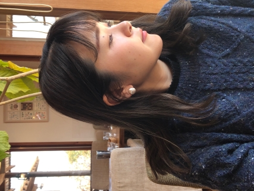

About
はじめまして。歳川（としかわ）と申します。
関東出身の30歳（2022年現在）
父・母・弟がプログラマーだった影響もあり、この年からではありますがプログラマーを目指すことを決意。
現在はQLIPプログラミングスクール「WEBアプリケーション制作科」で学んでいます。
学べば学ぶほど、難しい課題に取り組む楽しさやどんどん新しい知識を取り入れていける部分に面白さを感じています。
卒表制作では主にバックエンドを担当し、PHP,Laravelへの知識を深めているところです。
また、クラスのチーム名「燎（かがりび）」と、卒業制作の企画「釣りトク（釣りスポット紹介サイト）」
両方とも私の案が採用され、アイディア力に自信が持てました。

- 名前:
- 歳川 柚里香 （としかわ ゆりか）
- 所在地:
- 徳島
- 訓練校:
- 株式会社Qlip
- 訓練期間:
- 2022年9月～2023年3月
- こよなく愛するもの:
- ミルフィー（愛うさぎ）